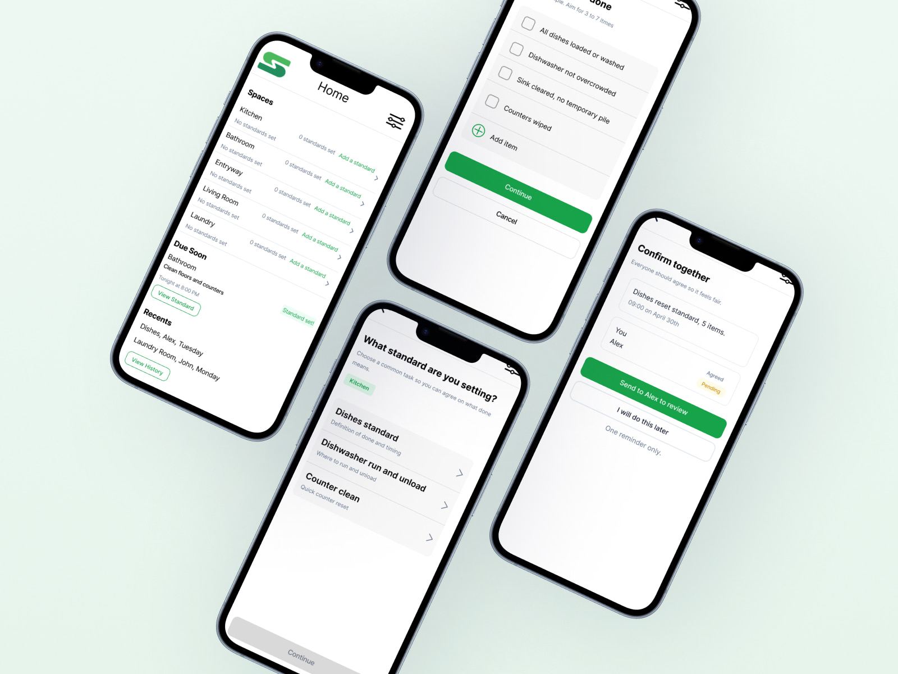
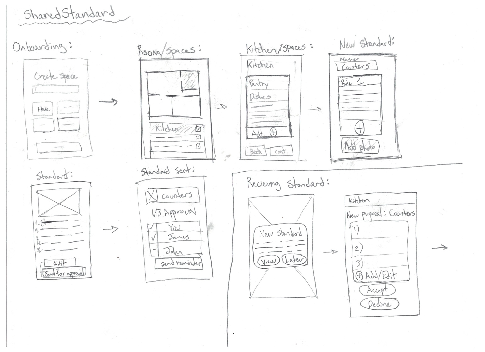

Methods
- 6 one on one interviews
- 1 two person interview
- 2 contextual inquiry walkthroughs
- Secondary observations including a grocery store trip and shared laundry room
- Participants included students and working professionals
IXD 105 · UX Concept · Mobile Prototype
Shared standards for shared spaces.
SharedStandard is a UX concept and high fidelity mobile prototype developed to address roommate conflict around shared-space chores. Instead of treating chores as a motivation problem, the project reframed the issue as a coordination problem shaped by informal expectations, mismatched definitions of done, and reminders that quickly start to feel personal.

SharedStandard was designed for young adult roommates living in shared housing, where conflict around chores often comes from unspoken expectations rather than a lack of care. In shared spaces like kitchens and bathrooms, people regularly assume they are on the same page, but their standards for what counts as done can be very different.
The concept helps roommates create a shared definition of done, pair it with a timing rule, confirm agreement together, and reduce the need for repeated reminders.
Research showed that unclear expectations turn practical issues like dishes, counters, or bathroom cleanup into recurring interpersonal tension. In many shared homes, expectations stay implied rather than written down, and once one person feels forced to remind another more than once, the interaction quickly starts to feel like nagging.
“If I send one reminder, that should be enough, and beyond that it feels like nagging.”
Existing tools could handle assignments, lists, or expenses, but they did not solve the social problem of aligning expectations for shared spaces. That gap shaped the opportunity for SharedStandard: build a calm, lightweight tool that helps roommates agree on what a finished task actually looks like before conflict starts.
Interviews, contextual inquiry, and observation revealed that chore tension often came from implied expectations and mismatched definitions of done.
Patterns were organized into the key themes of ambiguity, reminder friction, low tolerance for repeated follow up, and the need for calm coordination.
Existing tools supported assignment and scheduling, but did not help roommates align on what a completed shared-space task actually meant.
The concept focused on the Shared Standard Reset direction because it best addressed the strongest research signal: different standards, not lack of effort.
Early sketches and wireflows translated research into interaction structure, helping define the flow before moving into polished interface design.
A mobile first prototype was built around spaces, definitions of done, timing rules, agreement states, reminders, and lightweight updates.
Moderated testing checked whether users could create standards, understand agreement states, use reminders, and update expectations when the system was not working.
Templates, clearer approval language, more visible edit actions, and lighter weight completion flows were introduced based on testing feedback.
These early sketches helped translate research insights into possible interaction flows. Starting with hand-drawn wireframes made it easier to explore structure, priorities, and task sequence before moving into wireflows and the high-fidelity prototype.



The final concept was a mobile first shared household tool organized by spaces. Rather than using points, surveillance, or gamification, it focused on making expectations explicit and helping roommates coordinate with less friction.
Roommates choose a space and chore, then define what done means through a short checklist.
The app pairs each standard with a timing expectation so the routine is clear, not assumed.
A shared agreement and one gentle reminder reduces the need for repeated, emotionally loaded follow up.


The final concept did not try to pressure people into compliance. Instead, it created a shared reference point that made expectations visible, reduced ambiguity, and supported calmer coordination in daily life.
1
Shared definition of done
1
Gentle reminder instead of repeated nagging
0
Points, surveillance, or gamified pressure
SharedStandard reinforced that friction in digital products often reflects friction already present in everyday relationships. The strongest design move was not adding more features, but reducing emotional overhead through clearer expectations, calmer wording, and lower effort interactions.